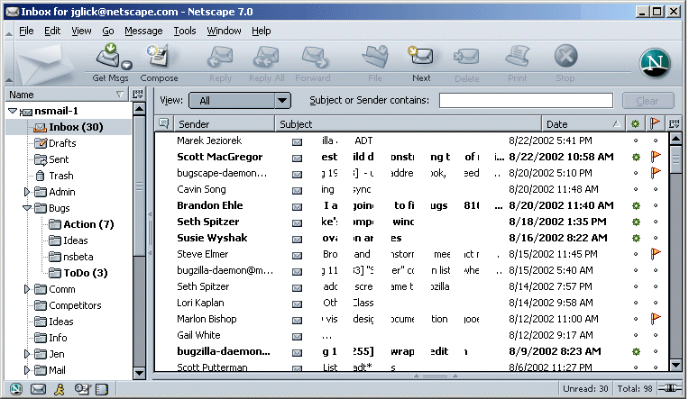
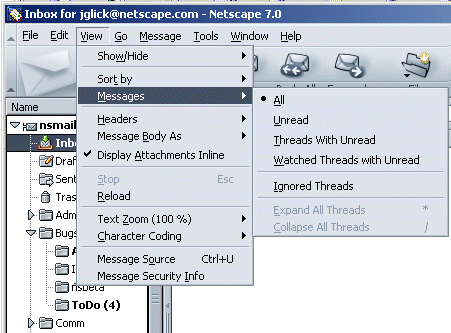
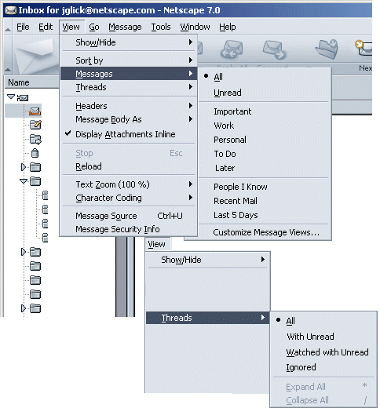
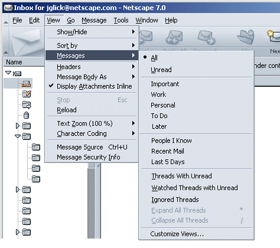
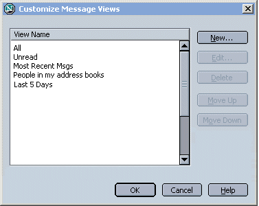
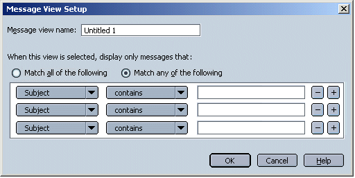
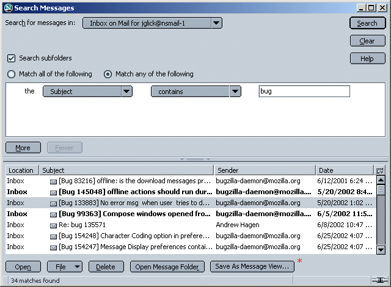
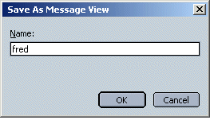

|
Buffy/Mozilla: Mail and
Newsgroups
|
UI Specification
|
|
Message Views
|
Last
Modification:
|
|
Author: Jennifer Glick
Creation Date: 12 September 2002
|
Status: Mostly Complete
|
|
Quicklinks:
Main Mail Window
Menus
Message Views
Message View Setup
Save Search Query as a Msg
View
Preferences
|
Feature Team
|
Engineering
|
Scott Putterman, Scott
MacGregor, Samir Gehani, Seth Spitzer
|
|
Marketing
|
Gregg Landskov, Rafael
Ebron
|
|
QA
|
|
|
Docs
|
Robin Foster
Clark
|
|
UE
|
Jennifer
Glick
|
Please post all comments and suggestions regarding
this spec to the newsgroup,
netscape.public.mozilla.mail-news.
|
Open Issues
- Check wordings stuffs w/Robin.
Bugs
- 74432 - View menu has Watch/Ignore for mail, feature is news
only
- 156930 - Views: Need better handling of Next in this case for
QuickSearch,Watched View
- 180019 - mailviews: if you cancel when trying to create a
custom mail view, it leaves the picker in a bad state -
Fixed.
- 180140 - mailviews: biff
mailview to rebuild, unexpected results -
jen to comment in bug, dup of
180203?
- 180203 - mailviews: junk mail appears in not junk view -
nsbeta1
- 183331 - Message Views feature: UI Nits - nsbeta1
- 183363 - Views Feature: Save a Search query as a View -
Future.
- 183591 - Add View and Search for Messages with attachments -
Fixed.
- 187990 - mailviews - dropdown out of sync if view set in
View|Messages - nsbeta1+
- 188404 - MailViews: OK Msg Views dialog and "Customize..."
remains - nsbeta1
- 188407 - MailViews: View dropdown shouldn't show
"Customize..." as a View - nsbeta1
- 189490 - Mailview should be remembered through exit.
- 180394 - mailviews] ctrl + a doesn't work after I switch
views (focus is in the wrong page?) - nsbeta1+
- 186162 - mailviews - "People I DON'T Know" isnt working
properly. Unconfirmed.
- 186166 - mailviews - Allow SORT of custom mail views.
Unconfirmed/Future.
- 189493 - Quicksearch and mailviews don't play well together -
clear QS via backspace.
- 189543 - Mailviews: View dropdown menu items should be in
View:Messages Menu. adt1,
nsbeta1+
Summary
"Message Views" is a feature which will help users locate,
organize and prioritize their mail messages. A View is used to filter
and display only those messages matching a given set of criteria. We
will ship with a set of pre-defined Views, but users can also create
their own.
Design Details
1. Main Mail Window

- Default is "All"
- "View" dropdown has "Customize..." option at bottom of
list.
- When the user selects "Customize..." the "Message Views"
dialog opens. If user cancels the Message Views dialog, the View
menu should return to its previous selection. If the user leaves
the Message Views dialog open, but switches focus back to the Main
Mail Window, the View menu should return to its previous
selection.
2. Menus - in progress
Need a main menu location for new Msg Views feature. View:
Messages seems logical choice, especially since it already contains
some Views items like "All" and "Unread". Problem is what to do with
existing Threaded related menu items. Do they become part of Msg
Views feature or separate from it? Should Threaded items be in there
own menu item and separate from Views? Or should Threading interact
with Views, and if so, how? Is a Threads with Unread with Labels
something we think is valuable to users?
a. Existing Menu
- Views and Thread items combined.
- First 4 items are radio menus (one selection only), 5th is
checkbox menu (on/off), 6th and 7th are action menu items.
- Msg View items are radio menus only. (on selection at a time
allowed).

b. Option 1
- Group all the Threading type stuffs together in a separate
menu.

c. Option 2 - Approved
- Combine Thread and Msg View items
- Added Threaded items to View dropdown if time.
- Selecting a Msg View cancels a Threaded View and selecting a
Threaded View cancels a Msg View.
- Bug - Ignored and Watched only show in News.
- Ignored is a toggle.

3. Message Views

- Move Up, Move Down - Lets you reorder the Views. The order
they appear here is the order they appear in the "View" Quick
Search bar dropdown and in the "View: Messages" menu.
- Wording: should the dialog have any descriptive wording?
Message Filters does not.
4. Message View Setup
Opens from Message Views dialog, "New" or "Edit".

- Message view name: default to "Untitled 1", etc.
- Modal to Message Views dialog.
5. Save Search Query as a Msg View (Future
- not yet implemented)
Once a minimum of one criteria row has been defined, "Save As
Message View" button is enabled.

Clicking the "Save As Message View" button opens the Save As
Message View dialog, which is used to name the View.

- Modal to Search dialog.
- OK - View is created and name added to bottom of View menu.
User returns to Search dialog.
- Cancel - View is not created. User returns to Search
dialog.
6. Default Views
Views already customized with which we want to ship. Most value
for users "out of the box". Especially since this may be more
difficult for novice/average users to setup on their own
|
Name
|
Criteria
|
|
All
|
All messages
|
|
Unread
|
Unread messages
|
|
Read
|
Read messages
|
|
People I Know
|
In any Local AB
|
|
Personal AB
|
PAB only
|
|
Today/Most Recent
|
Today's Msgs
|
|
Last 5 Days
|
Last 5 Days
|
|
Categories/Groups?
|
|
|
Msgs with Attachments
|
Show only msgs with Attachments
|
|
Labels
|
|
7. Preferences - Future
The "View" menu is located on the Quick Search Bar. If the user
decides to not show the QS bar, the View menu is not shown
either.
Optional: Option to remove "View" menu from QS bar.

Issues
- Are Views per account or global? Global. 1/17/03,
Issues Meeting.
- Are Msg Views persistent across folders? Should a selected Msg
View remain when switching folders? Yes. 1/17/03,
Issues Meeting.
- Bug 183591 - Add View and Search for Messages with
attachments. Is it a concern at all that this doesn't work for
existing profiles? Not a problem for most users. 1/17/03,
Issues Meeting.
- Should Quick Search stick across folders then as well? No.
Reset per folder. 1/17/03, Issues Meeting.
- As new msgs come in, do they obey the current View? For
example, if a do a Get Msgs, do the messages that don't match the
View not get displayed but the ones that do match it, do?
Yes, it should. Fill bugs as nec. 1/17/03, Issues
Meeting.
- Interaction of Msg Views and Threaded Views. Separate for
now. Cancel each other out.1/17/03, Issues Meeting.